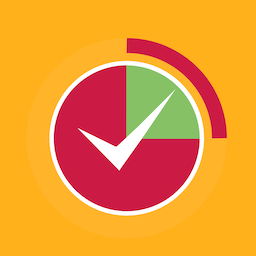

習慣・目標管理Habits & goals
Remaining
目標まであとどれくらい？How much is left to reach your goal?
記録するたび、残りが減る。数字とグラフで、日々の積み重ねを実感できます。Log your activity and watch what’s left count down. See your daily progress in numbers and charts.
特徴を見るExplore features+
- 日・週・月・期間指定の目標Daily, weekly, monthly, and custom-period goals
- 一覧・カレンダー・グラフ・ダッシュボードLists, calendars, charts, and the Dashboard
- 連続記録・通知・ウィジェットRecording streaks, reminders, and widgets

滑走日記・ギア管理Snow diary & gear
SnowTracks
雪の上の一日を残そうKeep every snow season with you
ゲレンデ、天候、ギア、写真をまとめて記録。シーズンを越えて、自分の滑走日記を振り返れます。Record slopes, weather, gear, and photos. Look back on your days on the snow, season after season.
特徴を見るExplore features+
- 日付・ゲレンデ・天候・写真を記録Log dates, slopes, weather, and photos
- 使ったギアを管理Keep track of the gear you used
- 過去のシーズンを振り返るRevisit earlier seasons